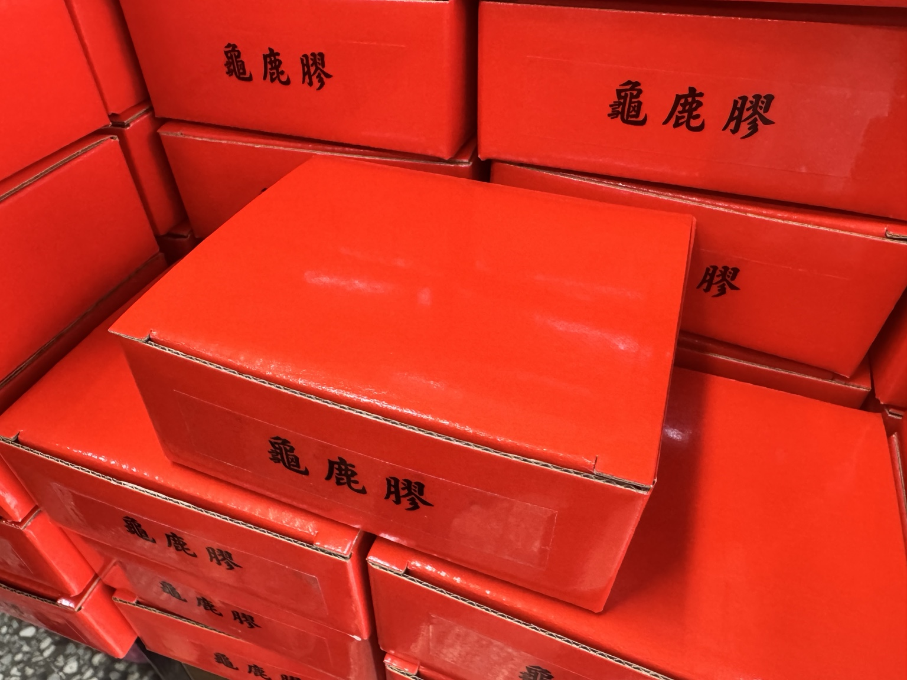

把龜鹿帶回日常，讓不同型態的選擇與食用方式更容易理解。
濃縮膏狀型態，可直接食用，也可加入溫水沖泡，亦可搭配粥品。
液態型態，開封即可飲用；若偏好溫熱口感，也可隔水加熱後再飲用。

濃縮湯塊型態，常見用於燉雞湯、排骨湯與藥膳湯品，也可作為保溫壺沖泡飲使用。
粉末型態，可加入溫水沖泡，也可作為粥品或料理的日常搭配方式。
膏、飲、湯塊、粉。
直接食用、即飲、燉湯、沖泡。
雞湯、排骨湯、粥品或保溫壺沖泡。